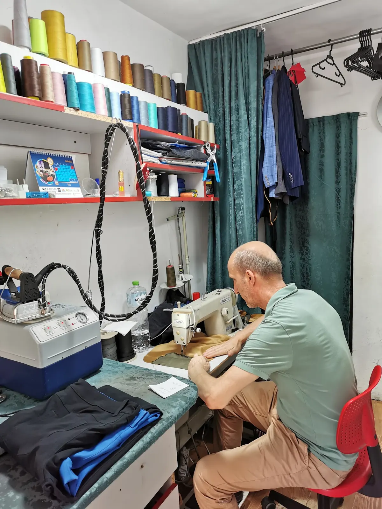
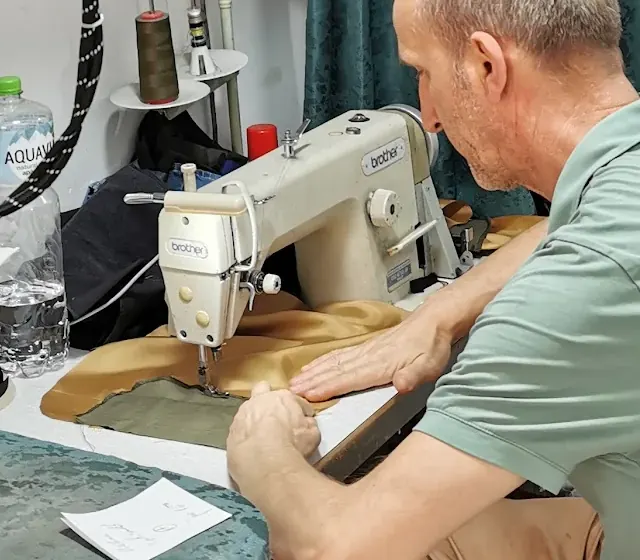
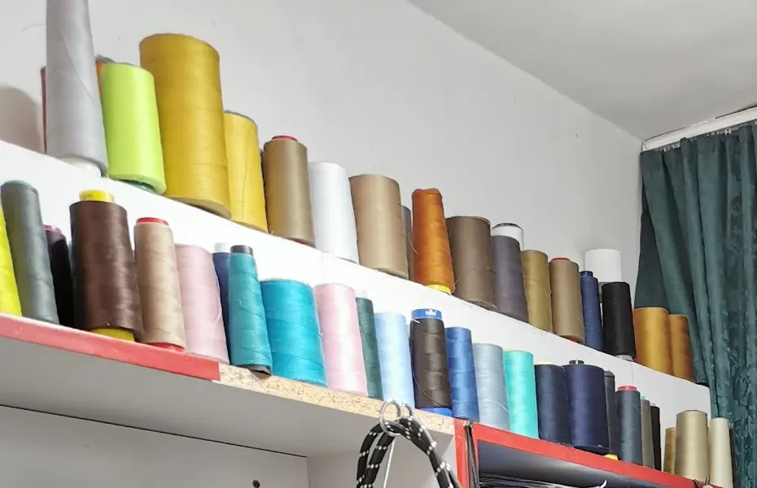
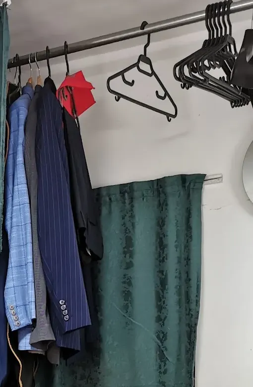
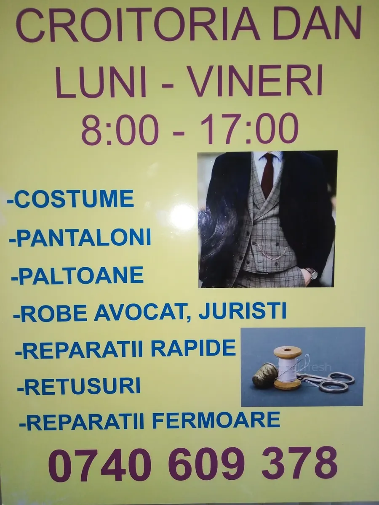

{{Croitor · Piața Unirii 2, Iași|Tailor · Piața Unirii 2, Iași|Alfaiate · Piața Unirii 2, Iași}}
CroitoriaDan
{{Tivuri, fermoare, costume și paltoane aduse pe măsura dumneavoastră. Un atelier mic, la doi pași de Piața Unirii, cu zeci de culori de ață pe raft — ca tivul să nu se vadă.|Hems, zips, suits and coats brought to your measure. A small workshop a few steps from Piața Unirii, with dozens of thread colours on the shelf — so the hem doesn't show.|Bainhas, fechos, fatos e sobretudos acertados à sua medida. Um atelier pequeno, a dois passos da Piața Unirii, com dezenas de cores de linha na prateleira — para a bainha não se notar.}}

{{Ce aduceți la Dan|What to bring to Dan|O que trazer ao Dan}}
{{Ce se coase aici|What gets sewn here|O que se cose aqui}}
{{Lista e cea din vitrina atelierului. Dacă piesa dumneavoastră nu e pe ea, întrebați — un croitor vede repede ce se poate face.|This is the list from the workshop window. If your piece isn't on it, just ask — a tailor sees quickly what can be done.|A lista é a da montra do atelier. Se a sua peça não está nela, pergunte — um alfaiate vê depressa o que se pode fazer.}}
{{Fișa de retuș|The alteration slip|O pedido de arranjo}}
{{Spuneți ce e de făcut înainte să veniți|Say what needs doing before you come|Diga o que há a fazer antes de vir}}
- {{Piesa|The piece|A peça}}{{Pantaloni, sacou, palton, robă…|Trousers, jacket, coat, robe…|Calças, casaco, sobretudo, toga…}}
- {{Ce e de făcut|What to do|O que fazer}}{{Scurtat, strâmtat, fermoar — și cu cât, dacă știți.|Shorten, take in, zip — and by how much, if you know.|Encurtar, apertar, fecho — e quanto, se souber.}}
- {{Până când|By when|Até quando}}{{Fără grabă sau urgent. Mesajul pleacă gata scris pe WhatsApp.|No rush or urgent. The message goes out ready-written on WhatsApp.|Sem pressa ou urgente. A mensagem sai já escrita no WhatsApp.}}

{{Ce spun clienții|What customers say|O que dizem os clientes}}
{{Măsurat de 48 de oameni|Measured by 48 people|Medido por 48 pessoas}}
- 5 ★41
- 4 ★2
- 3 ★2
- 2 ★0
- 1 ★3
- {{Un meseriaș generos, prietenos și priceput — genul de croitor la care te întorci.|A generous, friendly, skilled craftsman — the kind of tailor you come back to.|Um artesão generoso, simpático e competente — o tipo de alfaiate a quem se volta.}}
- {{Tivul s-a făcut cât s-a așteptat, cu ață de aceeași culoare, și pantalonii au plecat călcați.|The hem was done while the customer waited, with matching thread, and the trousers left pressed.|A bainha foi feita enquanto o cliente esperava, com linha da mesma cor, e as calças saíram passadas.}}
- {{Chiar și din magazinele de costume din zonă, clienții sunt trimiși la el pentru ajustări.|Even the suit shops nearby send customers to him for adjustments.|Até as lojas de fatos da zona mandam os clientes a ele para os acertos.}}
{{Pe scurt, ce se repetă în recenzii: pricepere la retușuri de pantaloni, ață potrivită, răbdare.|In short, what comes up again and again: skill with trouser alterations, matched thread, patience.|Em resumo, o que se repete nas avaliações: jeito para arranjos de calças, linha certa, paciência.}}
{{Unde și când|Where and when|Onde e quando}}
{{Chiar în Piața Unirii|Right on Piața Unirii|Mesmo na Piața Unirii}}
Piața Unirii 2, sc. C, parter
707380 Iași
{{Program|Opening hours|Horário}}{{de confirmat|to be confirmed|a confirmar}}
{{Servicii|Services|Serviços}}
{{De la tiv la robă|From hem to robe|Da bainha à toga}}
{{Șapte lucruri scrise pe afișul din vitrină, explicate pe scurt. Pentru fiecare, puteți trimite o fișă pe WhatsApp cu piesa deja aleasă.|Seven things on the poster in the window, briefly explained. For each one you can send a slip on WhatsApp with the piece already chosen.|Sete coisas escritas no cartaz da montra, explicadas em poucas palavras. Para cada uma pode enviar um pedido por WhatsApp com a peça já escolhida.}}
{{Înainte de a veni|Before you come|Antes de vir}}
{{Trei sfaturi de croitor|Three tailor's tips|Três conselhos de alfaiate}}
- {{Aduceți pantofii|Bring the shoes|Traga os sapatos}}{{Pentru tivul de pantaloni, lungimea se ia cu pantofii cu care îi veți purta.|For a trouser hem, the length is taken with the shoes you'll wear them with.|Para a bainha das calças, o comprimento mede-se com os sapatos com que as vai usar.}}
- {{Probați la atelier|Try it on here|Prove no atelier}}{{Strâmtatul și lărgitul se marchează pe dumneavoastră, cu creta, nu din ochi.|Taking in and letting out are marked on you, in chalk, not by eye.|Apertar e alargar marcam-se em si, a giz, não a olho.}}
- {{Spuneți termenul|Say when you need it|Diga o prazo}}{{Dacă e pentru o nuntă sau o pledoarie, spuneți data de la început.|If it's for a wedding or a court hearing, say the date from the start.|Se for para um casamento ou uma audiência, diga a data logo de início.}}
{{Fișa de retuș|Alteration slip|Pedido de arranjo}}
{{Ce cosem pentru dumneavoastră?|What shall we sew for you?|O que cosemos para si?}}
{{Patru întrebări scurte. La final se deschide WhatsApp cu mesajul gata scris către Dan — îl citiți și îl trimiteți dumneavoastră.|Four short questions. At the end WhatsApp opens with the message to Dan already written — you read it and send it yourself.|Quatro perguntas curtas. No fim abre o WhatsApp com a mensagem para o Dan já escrita — lê-a e envia-a você.}}
{{Atelierul|The workshop|O atelier}}
{{O cameră mică, un raft de ață|A small room, a shelf of thread|Uma sala pequena, uma prateleira de linhas}}
{{La scara C din Piața Unirii 2, la parter: o mașină de cusut industrială, o masă de călcat cu abur, perdele verzi și rafturi pline de mosoare. Aici lucrează Dan.|At staircase C of Piața Unirii 2, ground floor: an industrial sewing machine, a steam pressing station, green curtains and shelves full of spools. This is where Dan works.|Na escada C da Piața Unirii 2, rés-do-chão: uma máquina de costura industrial, uma estação de engomar a vapor, cortinas verdes e prateleiras cheias de bobinas. É aqui que o Dan trabalha.}}



{{Croitorul|The tailor|O alfaiate}}
{{Domnul Dan|Mr Dan|O senhor Dan}}
{{Clienții îl descriu la fel: generos, prietenos, priceput. Unii au intrat pentru un tiv și au plecat cu pantalonii și călcați. Alții au ajuns la el trimiși chiar de vânzătorii din magazinele de costume din apropiere.|Customers describe him the same way: generous, friendly, skilled. Some came in for a hem and left with the trousers pressed too. Others were sent to him by the staff of suit shops nearby.|Os clientes descrevem-no da mesma maneira: generoso, simpático, competente. Uns entraram por uma bainha e saíram com as calças também passadas. Outros chegaram mandados pelos vendedores das lojas de fatos ali perto.}}
- {{Adresa|Address|Morada}}Piața Unirii 2, sc. C, parter
- {{De când|Since|Desde}}{{de confirmat|to be confirmed|a confirmar}}
- {{Limbi|Languages|Línguas}}{{Română; engleză|Romanian; English|Romeno; inglês}} {{de confirmat|to be confirmed|a confirmar}}
{{Contact|Visit|Contactos}}
{{La doi pași de Unirii|A few steps from Unirii|A dois passos da Unirii}}
Piața Unirii 2, sc. C, parter · 707380 Iași · 0740 609 378
{{Program|Opening hours|Horário}}{{de confirmat|to be confirmed|a confirmar}}
{{Înainte de un drum special, un telefon scurt nu strică.|Before a special trip, a quick call doesn't hurt.|Antes de uma ida de propósito, um telefonema rápido não faz mal.}}
{{Cum ajungeți|How to get there|Como chegar}}
- {{Adresa e chiar Piața Unirii nr. 2 — căutați scara C, la parter.|The address is Piața Unirii no. 2 itself — look for staircase C, ground floor.|A morada é a própria Piața Unirii n.º 2 — procure a escada C, rés-do-chão.}}
- {{Plus Code: 5H8J+V2 Iași.|Plus Code: 5H8J+V2 Iași.|Plus Code: 5H8J+V2 Iași.}}
- {{Parcare și stația cea mai apropiată: de confirmat.|Parking and nearest stop: to be confirmed.|Estacionamento e paragem mais próxima: a confirmar.}}